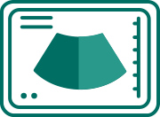

Elite Medical Care
SmartMed offers exclusive primary, diagnostic, and urgent care services in the comfort of your own home. This is elite medical care provided by the most select doctors. With SmartMed, you're free to seek health on your terms.
PRIMARY

DIAGNOSTIC
URGENT